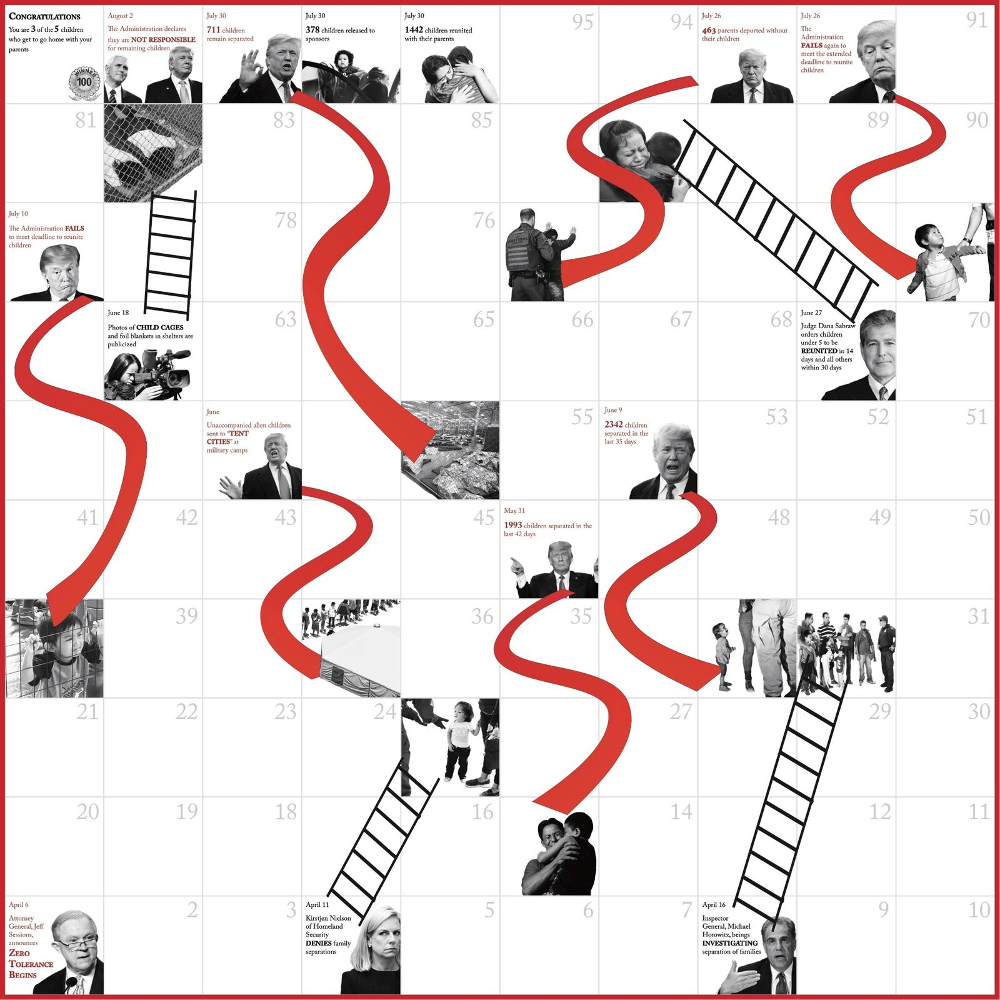
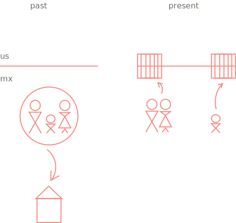
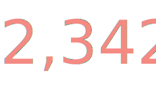
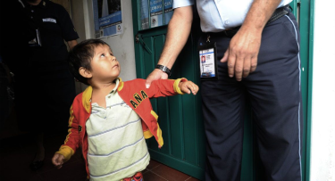
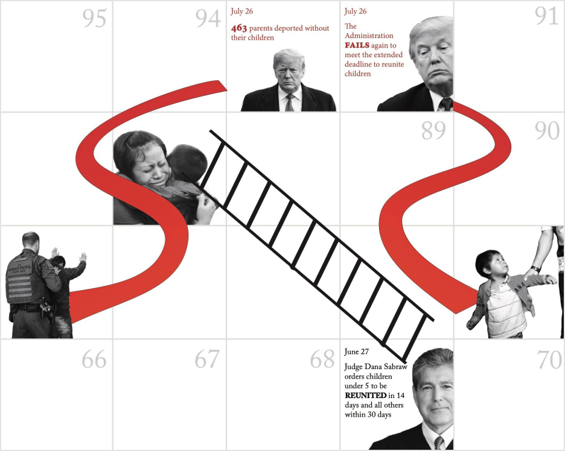

Trump's Game is a chilling twist on a childhood board game.
my role
Data research, prototyping, graphic design (adobe cs). Collaborated with fellow Notre Dame student
results
Exhibited at 2019 Catholic Social Tradition Conference

the media erupted
Last June 2019, photographers leaked images of undocumented children in cages at U.S. detention centers.


why?
We dove into research to find how this all began.

the zero tolerance policy
In the past, undocumented families returned to Mexico while their immigration cases pended. This new policy required immediate criminal prosecution and sentence to detention centers. Children, who are restricted from adult detention centers, were sent to Human Service’s Office of Refugee Resettlement. These are mainly provisional shelters at military bases, former warehouses, or tents.

it afffected
We cross referenced and gathered data from JSTOR, Academic Search Premier, Google Scholar, and .org sites. According to the Henry J Kaiser Family Foundation 2018 and Public Broadcasting Service 2018:

children separated at border(averaging 65/day)
increase due to zero tolerance policy
a pattern
We noticed a pattern. Policy makers promised to reunite a certain number of families by some date. Deadlines would pass; promises would go unmet.
reminiscent of board game
Chutes & Ladders is a game of chance. Depending on the dice, you may climb a ladder or slide down a chute. Like a game, the events surrounding the Zero Tolerance Policy seemed random, subject to the whim of politics.

our chilling take
We charted out major events across the board game (proportional by time).
start: Zero Tolerance Policy
end: most children reunited
ladders: reunion deadlines
chutes: failed deadlines

We removed the color from all our images to highlight the chutes in red. We wanted to emphasize the chilling reality of the game.
 final
We printed on matte photo paper, 24” x 24”, the actual size of a board game.